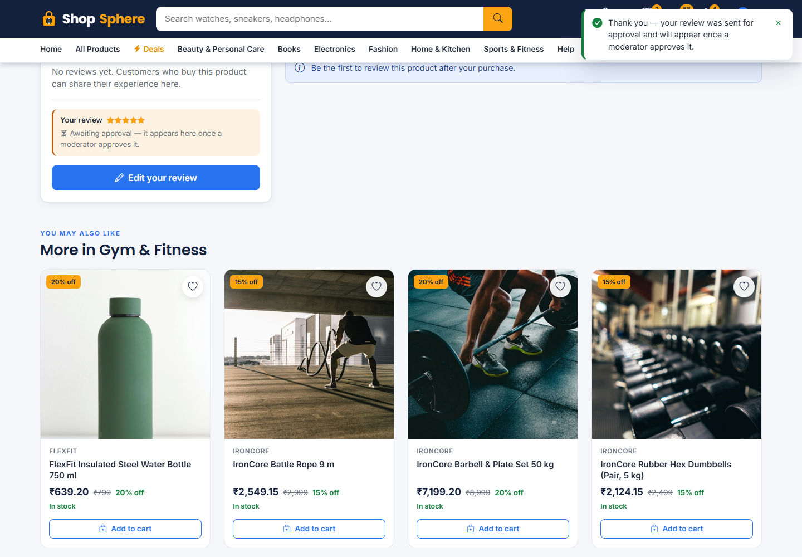
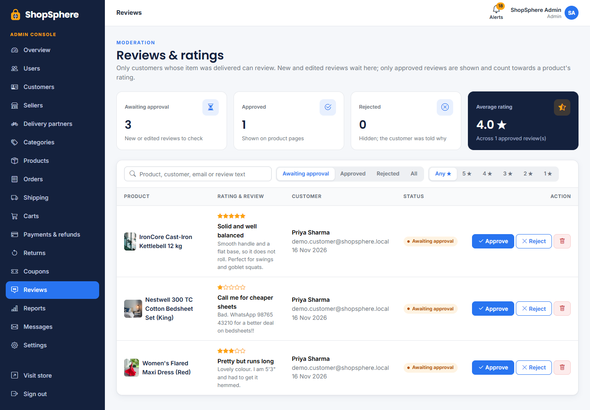
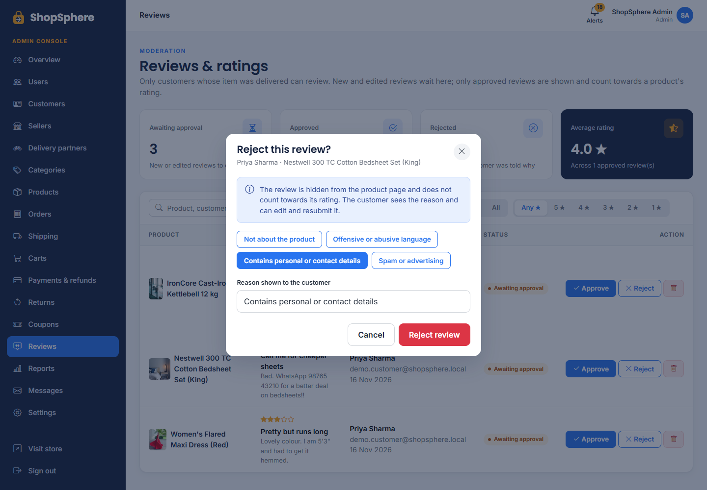
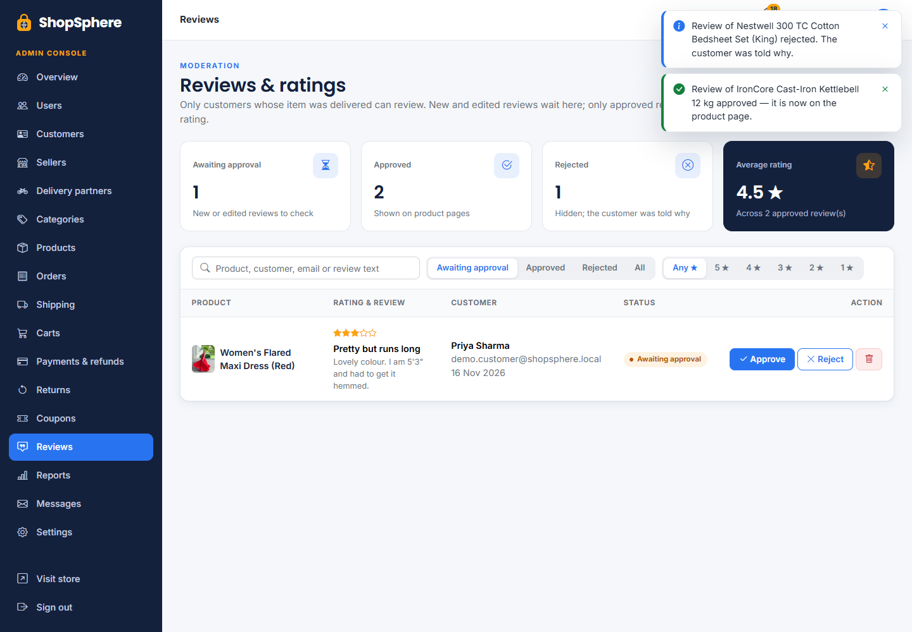
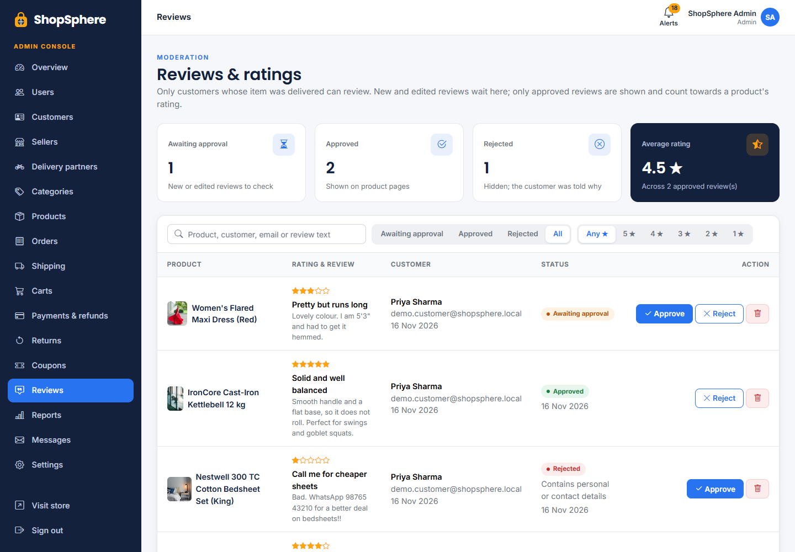
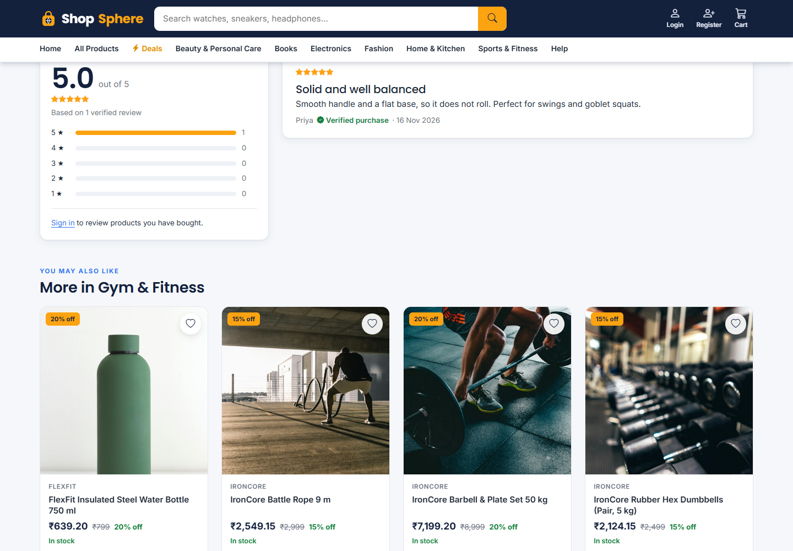
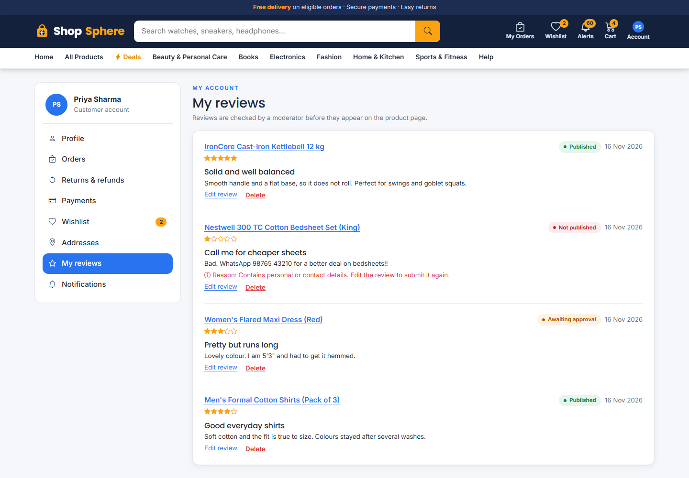
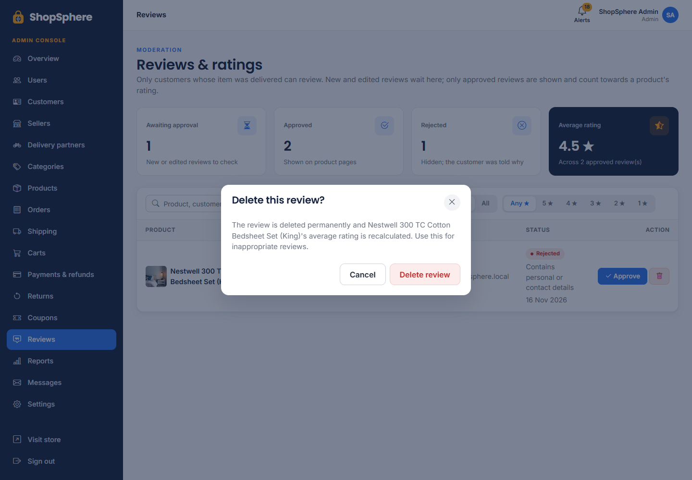

| Item | Details |
|---|---|
| Candidate | Anil Nayak |
| Internship | ITVedant / Vibgyor Advisors integrated internship |
| Project / Module | ShopSphere — Review and Rating Management (product page, customer account, admin console) |
| Stack | React 19 + Vite · Java 17, Spring Boot 4, JWT · MySQL (ecommerce_intern, table reviews) |
Repository: https://github.com/anilnayak9969-cmd/ShopSphere
Module code: ReviewServiceImpl, ReviewRepository, Review (table reviews), enum ReviewStatus, ReviewResponse, ReviewModerationDtos, review endpoints in ProductController, CustomerAccountController, CustomerController and AdminController; frontend components/ProductReviews.jsx, pages/customer/MyReviews.jsx, pages/admin/AdminReviews.jsx; SQL in DataBase/queries.sql section 14; this document in Docs/ReviewManagement.
Website: https://host-shop-sphere.vercel.app/ — reviews are at the bottom of every product page; customers: Account → My reviews; admin: Admin console → Reviews.
Reviews already existed in ShopSphere: verified buyers could rate (1–5 stars) and review a product, reviews showed on the product page with an average and star breakdown, customers could edit or delete their own review, and admins could delete reviews. Reviews were published immediately — there was no moderation and no status column. Everything marked ADDED was built for this assignment.
| Requirement | How ShopSphere implements it | Status |
|---|---|---|
| 1. Add a review / rating for purchased products | Write a review on the product page: 1–5 stars (required), an optional headline and review text. Only customers whose item was delivered can review, once per product. A new review is sent for approval ADDED. | Implemented |
| 2. Review moderation (admin) | Admin console → Reviews ADDED: cards (awaiting approval, approved, rejected, average rating), pending reviews first, filters by status and stars, search, and Approve / Reject (with a reason the customer sees) / Delete. Customers are notified of the decision; admins are notified of new reviews. | Implemented |
| 3. View product reviews | Every product page shows the average rating, the 5★–1★ breakdown and the reviews with the reviewer's first name and a Verified purchase badge. Now only approved reviews are shown and counted ADDED. | Implemented |
| 4. Delete / update reviews | Customers edit or delete their own review on the product page or in My reviews (status and rejection reason shown ADDED); an edited review is checked again ADDED. Admins delete inappropriate reviews; the product rating is recalculated each time. | Implemented |
Database design: table reviews | Table reviews with every assignment column; Boolean status (approved) plus moderation_status, rejection_reason, moderated_at ADDED. See Appendix A. | Implemented |





At the bottom of every product page, What buyers say shows the average rating out of 5, the number of reviews, a bar for each star value, and the approved reviews (newest first) with the reviewer's first name, a Verified purchase badge and the date. Visitors do not need to sign in. The same average appears on product cards and can be used to sort and filter the catalogue.



| Situation | Result |
|---|---|
| Reviewing a product not delivered to you | You can review this product once it has been delivered to you. (HTTP 403) |
| No star rating / rating outside 1–5 | Choose a rating / Rating must be 1-5 |
| Reviewing the same product again | Your existing review is updated (one per customer per product) |
| Editing an approved review | It goes back to Awaiting approval and is hidden until approved again |
| Rejecting without a reason | Give a reason for rejecting the review |
| Rating average and count | Approved reviews only; recalculated on every approve, reject, edit and delete |
| Moderation used by a customer or seller | HTTP 403 — admin only. Sellers cannot write reviews. |
| Privacy | Only the reviewer's first name is public; the admin queue shows the name and email |
Figures 1–10 were taken from the application running locally (React on localhost:5173, Spring Boot on localhost:8080, MySQL ecommerce_intern) with the demo customer Priya Sharma and the ShopSphere admin.
ReviewManagementTest (13) — new review awaits approval and admins are told, 1–5 star validation, approve publishes and recalculates the rating, reject with a reason, reason required, approving twice, moderation summary, queue filters, product page shows approved only, editing sends a review back for approval, unchanged review keeps its approval, customer delete, admin delete with notification. ReviewServiceImplTest (2) — buyers only. Full backend suite: 138 tests, all passing.| Assignment column | Assignment type | ShopSphere column (reviews) | Meaning |
|---|---|---|---|
| review_id | int (pk, auto_increment) | review_id BIGINT PK | Unique identifier for each review |
| product_id | int (fk) | product_id BIGINT FK → products | The reviewed product |
| customer_id | int (fk) | user_id BIGINT FK → users | The customer; (product_id, user_id) is unique |
| rating | int | rating INT | 1–5 stars |
| review_text | varchar(1000) | comment VARCHAR(2000) + title VARCHAR(120) | The written review and an optional headline |
| created_at | datetime | created_at DATETIME(6) | When the review was written |
| updated_at | datetime | updated_at DATETIME(6) | Last change |
| status | boolean | status BIT(1) | 1 = approved, 0 = unapproved ADDED |
| ADDED | moderation_status ENUM, rejection_reason, moderated_at | Pending / approved / rejected, why it was rejected, and when it was decided | |
status always mirrors moderation_status (true only for APPROVED); the extra column tells pending reviews apart from rejected ones. Reviews written before moderation existed were marked approved on start-up. The product's average and count are stored in products.rating_average / rating_count.
-- Product page: approved reviews and the average SELECT r.rating, r.title, r.comment, r.created_at FROM reviews r WHERE r.product_id = 70 AND r.moderation_status = 'APPROVED' ORDER BY r.created_at DESC; SELECT ROUND(AVG(rating), 2), COUNT(*) FROM reviews WHERE product_id = 70 AND moderation_status = 'APPROVED'; -- Add (waits for approval) INSERT INTO reviews (product_id, user_id, rating, title, comment, moderation_status, status, created_at, updated_at) VALUES (70, 8, 5, 'Solid and well balanced', 'Smooth handle ...', 'PENDING', b'0', NOW(6), NOW(6)); -- Approve / reject UPDATE reviews SET moderation_status = 'APPROVED', status = b'1', moderated_at = NOW(6) WHERE review_id = 15; UPDATE reviews SET moderation_status = 'REJECTED', status = b'0', rejection_reason = 'Contains personal or contact details', moderated_at = NOW(6) WHERE review_id = 14; -- Delete DELETE FROM reviews WHERE review_id = 14;
The full set, including the moderation queue, the star breakdown and keeping products.rating_average in step, is in DataBase/queries.sql section 14 (tested with ROLLBACK).
| Method | Path | Purpose |
|---|---|---|
| GET | /products/{id}/reviews, /products/{id}/reviews/summary | Approved reviews and the rating summary (public) |
| GET | /customer/products/{id}/review | Can I review it? + my review and its status |
| PUT | /customer/products/{id}/review | Add or update my review ({ rating, title, comment }) |
| DELETE | /customer/products/{id}/review | Delete my review |
| GET | /customer/reviews | My reviews with status |
| GET | /admin/reviews?status=&rating=&search=, /admin/reviews/summary | Moderation queue and cards (admin) |
| PATCH | /admin/reviews/{id}/approve, /admin/reviews/{id}/reject | Approve; reject with { reason } |
| DELETE | /admin/reviews/{id} | Delete an inappropriate review |